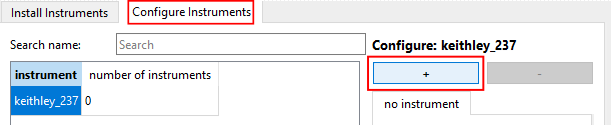
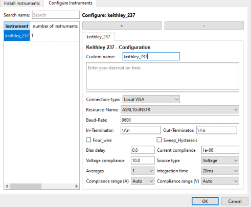
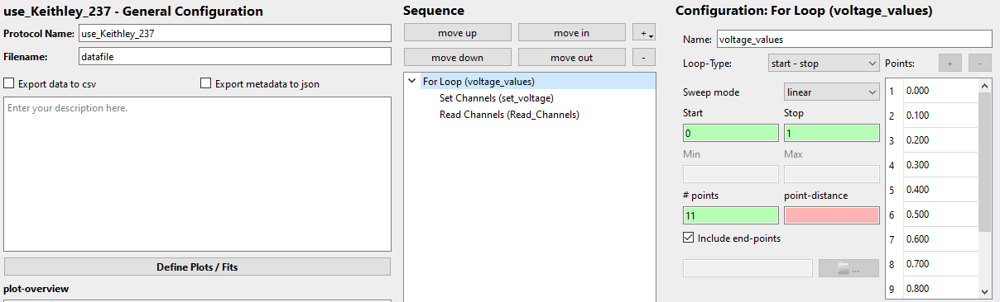
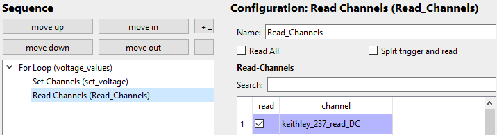
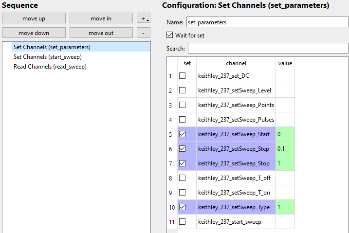
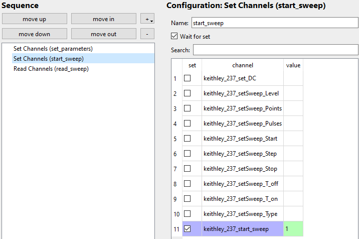

Table of contents
{: .text-delta } - TOC {:toc}Keithley 237 - Source Measure Unit (SMU)
Setup
Basic instructions to add a Keithley 237 SMU to your NOMAD-CAMELS installation.
Install
Install the instrument using the Manage Instruments button of NOMAD-CAMELS.

Find the instrument under the Install Instrument tab. Then click Install/Update Selected to install the instrument. This uses a pip install internally.
Add Instrument to CAMELS

Then go to the Configure Instrument tab and click the ➕ icon to add a new Keithley 237 instrument.
You can add as many of the same instrument type as you want by clicking the ➕ additional times if you want to use more than one of the same instruments.
Configure Device Settings

Here you can change the device settings like compliances, averages, integration time, etc.
Make sure you set the correct connection type (typically local VISA) and the correct resource name!
The communication settings (baud rate, terminators, etc.) can be changed as well and are device dependant.
Usage
Source Types
There are four basic usage types of the Keithley 237:
Source voltage, read current
Sweep voltage, read current and voltage ( reads the set value of the voltage, does not actually measure it)
Source current, read voltage
Sweep current, read voltage and current ( reads the set value of the current, does not actually measure it)
⚠ The source type of your Keithley 237 must be set in the device configuration window (see image above)
⚠ If
Source Typein the config window is set toVoltageorCurrentthen it is NOT possible to read the data created during a sweep in a measurement protocol using thestart_sweepchannel.
⚠ IfSource Typein the config window is set toSweep VoltageorSweep Currentthen it is NOT possible to read the data from an individual measurement using the channelread_DC.
Setting and Reading Individual Data Points
To set and read single data points (for example set one voltage and read the corresponding current value in a for-loop) set Source Type to Voltage or Current. When voltage is sourced current is read and when current is sourced then voltage is read.
This is not very fast as the constant device communication has a lot of overhead. One can achieve at most about 10 measurements per second using this method.
Example Protocol
Here is an example protocol for setting and reading individual data points.
For-Loop
Settings of the for-loop: it will create 11 values between 0 and 1 including the 1. 
Set Channel
Sets the set_DC channel to the value of the for-loop.
⚠ set_DC always sets the source type you selected in the configuration.

Read Channel
Reads the read_DC channel.
⚠ read_DC always reads the compliance side of the source type. So it reads voltage when current is sourced and reads current when voltage is sourced.

Resulting Data
Example data from such a for-loop measurement. From the recorded instrument settings (keithley_237_Source_Type entry) it is clear what was measured.
Display example data

Using Internal Sweeps
There are five different types of internal sweeps:
Fixed Level (
setSweep_type = 0)Linear Stair (
setSweep_type = 1)Logarithmic Stair (
setSweep_type = 2)Linear Stair Pulsed (
setSweep_type = 3)Logarithmic Stair Pulsed (
setSweep_type = 4)
For more details on the exact specifications of these internal sweeps check out the official manual on pages 3-47 to 3-56.
The type of sweep measurement is set by writing a value (0 to 4) to the setSweep_type channel (see list above).
Each type requires a different set of parameters from this list :
level, points, pulses, start, step, stop, t_off and t_on.
Setting up the Sweep
Sweep Parameters
Before you start the sweep measurement you have to set the required parameters to the desired value in a ‘Set Channels step’.
E.g. for a linear stair sweep from start=0 to stop=1 with step size=0.1. Bias delay and range are set in the instrument config page.
⚠ You MUST set the sweep type using the keithley_237_setSweep_Type channel:
Here we want the linear sweep so we set the value to 1 as this corresponds to the linear sweep (see list of 5 sweep types above)

Starting the Sweep
Then you can start the measurement by setting the value of keithley_237_start_sweep to 1

and in a different step you have to start the sweep.
Reading the sweep data
To read the measured data simply read the read_sweep channel:

Example Sweep Data
This produces the following data for a voltage sweep using a 15 kΩ resistor.
Display example data

The first column in the data is the set value (in this case the voltage) while the second column is the measured value (current) for that voltage.
The settings of the sweep can be read from the protocol_overview entry and the instrument settings.
← Back Next →